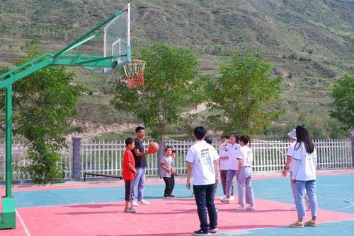

又是一年秋色好。
9月16日至18日，在决战脱贫攻坚、决胜全面小康社会、开启全面建设社会主义现代化国家新征程的关键节点，习近平总书记又一次来到湖南，来到长沙，希望湖南在推动高质量发展上闯出新路子，奋力谱写新时代坚持和发展中国特色社会主义的湖南新篇章。总书记的重要指示、殷殷嘱托，为湖南、为长沙未来发展擘画了一幅壮美的蓝图。
从“七里之城”到现代都市，从经济总量不足20亿元，一举飞跃到万亿俱乐部；连续12年获评中国最具幸福感城市，居民人均可支配收入稳居中部省会城市首位；率先成为湖南全面建成小康社会达标市，为全省树立标杆和样板……近年来，迈向全面小康的长沙，坚定，沉稳。奔跑的长沙，活力四射正青春。
读山：雁引愁心去，山衔好月来
乌龙山下，宁乡市资福镇珊瑚村。天微亮，贫困村民谢华就在园子里忙开了。舒缓的山坡两旁，烟田整齐划一，一垒垒烘干的烟草整齐码放；水稻田里，小龙虾浅底游翔，果树林里，金色果子若隐若现……这些由谢华或承包或自有的园子，加起来每年能带来15万元收入。谢华笑着说：“累是累点，但日子有奔头！”
2015年以前的浏阳、宁乡等地偏远山区，还有着近15万贫困户。山道弯弯，拖缓了基础设施建设，也阻挡了客商投资脚步。枕着山色入梦，大山茫茫，满眼青翠皆寂寥。
与集中连片特困地区不同，长沙属“插花贫”：84个省定贫困村的贫困户，只占全部贫困户的30%，70%的贫困户“插花”分布在非贫困村。
修路、建房、扶产业等，长沙摆开一处处脱贫战场。大山陆续迎来了帮扶队员。他们走村入户，引导中老年人养牛羊，鼓励留守妇女在扶贫车间灵活就业，引进社会资源回乡投资，协助村集体办起光伏等新兴产业项目……
山还是那些山，山中风景早已大不同。
不少山区村贫困户告别深山，挪出穷窝。2017年初，长沙县高桥镇贫困户罗忠海和其他贫困户拎包入住，搬进了易地扶贫搬迁集中安置点。“自来水通了，小孩离学校近了，超市和医院就在家门口，这是我们梦想的生活。”罗忠海说。“十三五”期间，长沙易地扶贫搬迁完成1078户3481人。
省委常委、长沙市委书记胡衡华说：“长沙不撒胡椒面，而是采取‘一村一策、一户一法，工作到村、扶贫到户’的做法，并打出产业扶贫、旅游扶贫、易地搬迁、危房改造等14个专项扶贫‘组合拳’，取得了显著效果。”
截至目前，长沙共有14.98万名贫困群众摘掉贫困帽、所有贫困村提前脱贫出列，贫困人口年均纯收入5年来提高了3倍多。
武陵山脉腹地，距离长沙近500公里的湘西土家族苗族自治州龙山县，是长沙脱贫攻坚“第二战场”。
虽隔山隔水，却情同手足。从1994年至今，长沙19个后盾单位与龙山县17个乡镇“结对子”，11批次100余名长沙干部赶赴龙山，脱贫攻坚“接力棒”传了26年。
从紧锣密鼓实现工程项目，到推动基本公共服务体系实现全覆盖，这26年是龙山实施项目最密的一段时间。通过援建长沙路、岳麓大道、村组道路等项目，加速了龙山城镇化进程。2019年，龙山城镇化率达到44.2%，农民人均纯收入比1994年增长13倍。
从政策输血到自我造血，这也是龙山历史上经济增长最快的26年。788个帮扶项目、9.26亿元帮扶资金注入，全县生产总值由2013年55.18亿元增加到2019年94.94亿元；产业结构日益优化，第三产业支撑作用凸显。
今年初，龙山县摘帽退出贫困县。
长沙在武陵山脉腹地铸就的这块丰碑，深深镌刻在龙山父老乡亲心中。
听水：寻芳湘水滨，光景日日新
没有谁能抵抗一条河流的亲近。
长沙母亲河——浏阳河，从大围山奔腾而出，蜿蜒流过5个县（市、区）、30个乡镇（街道）、102个村（社区）。伴随着长沙城市化进程加快，浏阳河被污染浇头盖面。
一场生态保卫战在浏阳河畔打响——关停整改沿线排污企业，拆除违法建筑，完成河岸景观建设。浏阳河清秀面庞逐渐清晰。
为呵护湘江长沙段及浏阳河、捞刀河、沩水、沙河、龙王港、靳江河这“一江六河”，长沙建立市、县、乡、村四级河长制体系，凝聚治水兴水管水合力。关工厂、清河道、提水质、美两岸……如今，河边芳草萋萋、渡船往返、水鸟翻飞，恰似水墨图徐徐舒展。
临水又亲水，诗意滨水空间正在形成。
作为浏阳河一级支流，圭塘河是长沙唯一的一条城市内陆河。由于城区土壤保水能力不够，季节性缺水严重，自净能力差，2016年，圭塘河被列入全国城市黑臭水体名单。
长沙市雨花区对圭塘河的治理从未停歇，并形成了包括“系统治理+精准治污”“生态整治+产业融合”等在内的“6+”治河模式。如今，顺着圭塘河往南，一座“和+”共享图书馆静立河岸。站在馆内，手捧书卷，沐浴清风，凭栏而望，水波轻荡，好不惬意。
长沙还有着16.02万余处小微水体。小微水体的治理不仅降低了区域水体污染，还能结合相关产业，走出适合农村发展的新道路。在望城区乔口镇盘龙岭村，2900余亩水田种植了荷花，养起了小龙虾。水中龙虾摄食有害昆虫，通过自然的方法控制杂草和病虫害，治理污染。日产量达2000公斤的“荷花虾”，加上集白鹭、荷花、湿地于一体的千亩荷花景观，给村里带来了可观收益。
每年，总有很多次，“长沙蓝”惊艳微信朋友圈。近年来，长沙从控尘、控排、禁燃、禁烧等方面，全力实施“六控十严禁”，空气质量优良率不断提升。蓝天白云游，绿野无尽头。从持续减排到防治大气污染，从持续增绿到环境整治……长沙泼墨挥毫，书写最美生态画卷。
长沙人的小康生活，也在水域蝶变中变得更有质感。
在河流沿线农村，长沙推进治厕、治垃圾、治房、治水、治“风”的“五治”工作；家门口的文化站，送戏下乡的文娱活动，让农民享受着过去城里人才有的丰富文化生活。河流淌过城区，长沙围绕“菜食住行购、教科文卫体、老幼站厕园”等15个要素，让市民步行15分钟就能享受20余类公共服务。去年以来，建成15分钟生活圈412个，实现城区全覆盖。
阅城：秋高登城楼，迥拔凌霄汉
9月27日上午，我国迄今研制的最大直径盾构机在长沙下线。这台整机长达150米、总重量4300吨、最大开挖直径达16.07米的超级“巨无霸”，当天在无数人的手机上“霸屏”。
就在10天前，9月17日下午，正在湖南长沙考察调研的习近平总书记冒雨来到山河智能装备股份有限公司。听说企业成功研发200多种具有自主知识产权和核心竞争力的装备产品，习近平总书记十分高兴。他希望湖南制造业抓住机遇，实现更好发展，为国家作出更大贡献。
今年初，新冠肺炎疫情肆虐。危难之中，长沙强大的制造业，显示出强大的力量。
从图纸设计到产品正式下线，山河智能特装口罩机研制只花了25天，日产口罩逾10万只。
机器轰鸣声在智能化车间响起，山河智能、蓝思科技、比亚迪汽车、梦洁家纺、三一集团等一批长沙制造企业，快速改造生产线，投产口罩，扛起守护一城百姓的旗帜。
2017年以来，长沙锚定22条新兴产业链，用产业链思维抓发展。“缺龙头的引龙头，缺关键的补关键，缺高端的引高端，缺研发平台的建平台，要向价值链中高端迈进。”长沙市委副书记、市长、湖南湘江新区党工委书记郑建新说，在推进产业链建设上，长沙不遗余力。
长沙以全省5.6%的土地，创造了湖南30%以上的GDP和财政收入，制造业功不可没。近3000家规模以上工业企业，涉及工程机械、人工智能、轨道交通、航空航天等领域。
长沙被誉为“工程机械之都”，全球工程机械50强有4强在长沙崛起，全国工程机械前5强长沙占了3强，混凝土机械产量占全球产量的80%，大直径全断面硬岩隧道掘进机占全球市场份额67%，起重机械、挖机产量全国第一……较完备的工业生产体系，不仅夯实了长沙小康社会的“底色”，也给每一个生活在长沙的人们带来了便利与机会。
坐落在长沙经开区的铁建重工，是长沙城市建设的参与者和见证者。直径10余米，形似“摩天轮”；刀盘镶嵌，“张牙舞爪”向湘江地底挥拳……2011年，铁建重工自主研发的“湘江一号”，始发掘进长沙首条地铁过江隧道。到目前，长沙已开通5条地铁线路，总里程161.2公里，大大缩短市民出行时间。
当前，长沙正围绕5G应用、人工智能、大数据、轨道交通、工业互联网等新兴优势产业，在湘江新区、雨花经开区、天心经开区、岳麓山国家大学科技城、马栏山视频文创园等地，科学布局“新基建”“新经济”。
9月21日，中国（湖南）自由贸易试验区获批；9月24日，长沙片区正式授牌。长沙将打造全球高端装备制造业基地、内陆地区高端现代服务业中心、中非经贸深度合作先行区和中部地区崛起增长极。以自贸区获批为契机，长沙的装备制造、新材料、电子信息、食品等特色产业，将借助自贸区更深地融入全球价值链体系中；长沙企业将迎来国际化浪潮，更多的跨国公司也将参与到长沙创新崛起中；长沙市民小康生活更多彩，更便宜更丰富的进口商品，更多的国际化职业平台在向市民招手……
洞庭波涌连天雪，山水洲城正青春。一个个充满温度的数据，一个个走在前列的指标，一个个生动鲜活的样本……数十载惊涛拍岸，长沙赓续荣光、激流勇进，全面小康的壮美画卷正徐徐展开。
 关注湖南文化产业网微信公众号
关注湖南文化产业网微信公众号湖南文化产业网(www.hnci.net.cn)版权所有 (c) All Rights Reserved.
未经湖南文化产业网书面特别授权，请勿转载或建立镜像